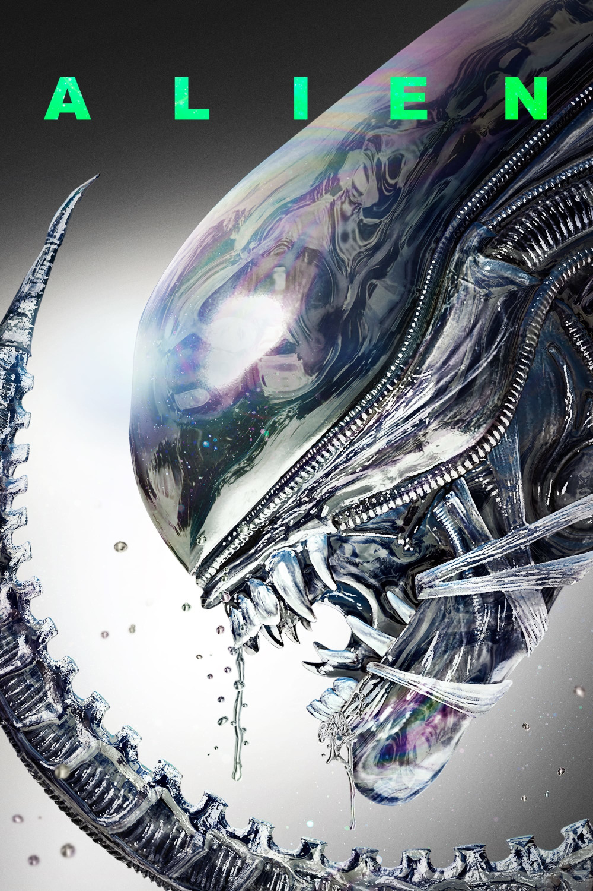

Мировая премьера: 25 мая 1979
Слоган: В космосе никто не услышит твой крик.
Сюжет: Экипаж космического корабля "Ностромо" получает сигнал бедствия и совершает посадку на неизвестной планете, где обнаруживает новую форму жизни с феноменальной жаждой уничтожения. Теперь членам экипажа придётся вступить с "чужим" в смертельную схватку.
Режиссёр: Ридли Скотт
Серия: Чужой
В ролях: Сигурни Уивер, Том Скерритт, Йафет Котто
| Сигурни Уивер | Эллен Рипли |
| Том Скерритт | Артур Даллас |
| Йафет Котто | Деннис Паркер |
| Иэн Холм | Эш |
| Вероника Картрайт | Джоан Ламберт |
| Гарри Дин Стэнтон | Сэмюэль Бретт |
| Джон Хёрт | Гилберт Кейн |
Бюджет: $ 11 млн.
Кассовые сборы в США: $ 84 млн.
Кассовые сборы в мире: $ 109 млн.
Продолжительность: 1 ч. 53 мин.
Рейтинг: 8.5